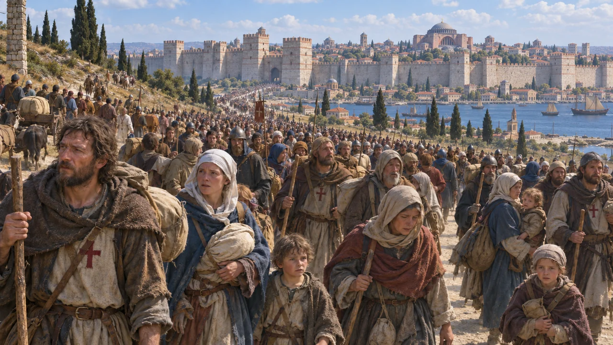
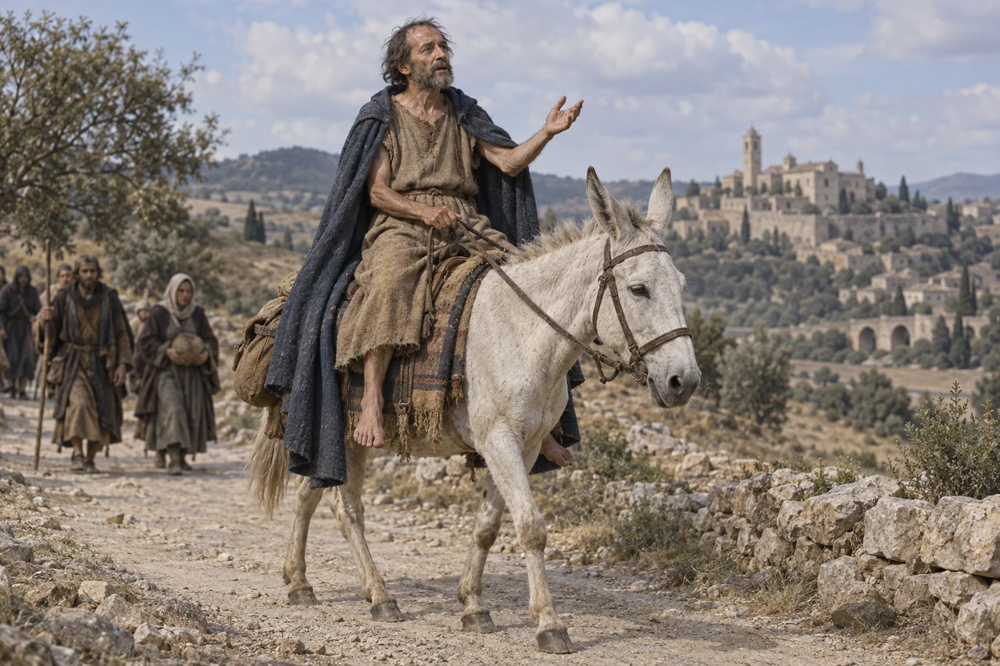
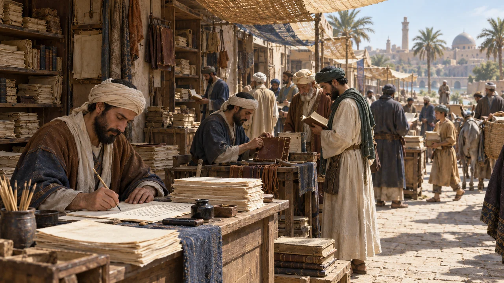
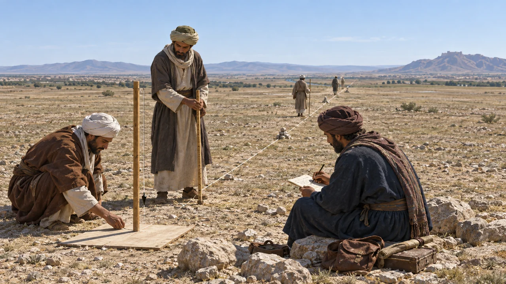
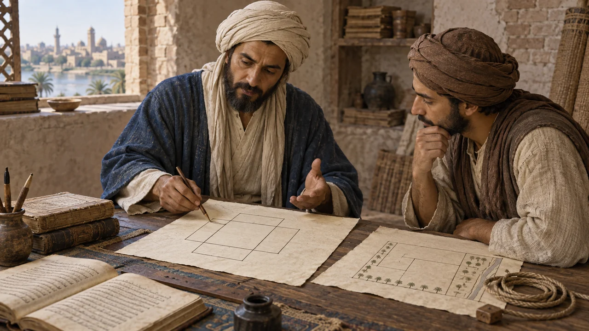

HİKMET EVİ · OKUMA GRUBU İÇİN
Kitaptan beş sahne
Haçlı kalabalığından Bağdat’taki kitapçılara, ölçümden cebire.
Bu beş görsel, Jonathan Lyons’un Hikmet Evi kitabında “III. kısım / Ez-Zuhr / Öğle” başlığından önceki anlatılara göre yapay zekâyla hazırlanmış tarihî canlandırmalardır. İnsanların yüzleri, mekânlar ve kitapta kesinleştirilmeyen ayrıntılar çizim yorumudur. Görsele dokunarak tam boy açabilir, PNG dosyasını ayrıca indirebilirsin.

KONSTANTİNOPOLİS · 1096
Anna Komnena’nın anlattığı Haçlı kalabalığı
I. kısım · El-İşâ / Yatsı — Birinci bölüm: Tanrı’nın savaşçıları · Basılı s. 29–30.
Kitaptan kısa alıntı
“tüm varlığıyla katı bir kütle halinde Asya içlerine doğru akın ediyordu”
Lyons’un Anna Komnena’dan aktardığı sözlerden kısa bir kesit · s. 30.
Kitap ne anlatıyor?
Anna Komnena’nın betimlediği büyük insan akını, Lyons’un yoksulluk ve yol yorgunluğu anlatısıyla birlikte okunur. Hareket, savaşçıların yanında halkı da yollara çıkarır. Sahne, kitabın Batı Avrupa’dan başlayan yolculuğuna insan ölçeğinde bir giriş sağlar.
Görseli nasıl okuyalım?
Kadınlar, erkekler ve çocuklar yükleriyle Konstantinopolis surlarına yaklaşıyor. Kalabalık kitabın betimlemesine dayanır; yüzler, giysilerin ayrıntıları ve şehir görünümü çizim yorumudur. Anna Komnena’nın kendisi sahnede yer almıyor.
PNG indir · 2,6 MB
KEŞİŞ PIERRE · PIERRE L’ERMITE
Beyaz katırın üzerindeki vaiz
I. kısım · El-İşâ / Yatsı — Birinci bölüm: Tanrı’nın savaşçıları · Basılı s. 30.
Kitaptan kısa alıntı
“Keşişin kolları ve ayakları hep çıplaktı ve kaba yünden yapılma gömleğinin üzerine ayak bileklerine kadar inen bir pelerin giyiyordu.”
Jonathan Lyons, Hikmet Evi · s. 30.
Kitap ne anlatıyor?
Lyons, Pierre’i küçük yapısı, beyaz katırı, kaba yün gömleği, uzun pelerini, çıplak kolları ve ayaklarıyla anlatır. Bu somut ayrıntılar, anlatıdaki kişiyi soyut bir addan çıkarır; kalabalığın izlediği vaizi gözümüzde canlandırmamızı sağlar.
Görseli nasıl okuyalım?
Beyaz katır ve vaizin giysileri kitaptaki betimlemeye dayanır. Yüzü, saçı, sakalı, beden hareketi ve kırsal çevre çizim yorumudur. Görsel, doğrulanmış bir portre değil, betimlemenin tarihî canlandırmasıdır.
PNG indir · 2,8 MB
BAĞDAT · KÂĞIT VE KİTAP
Bilginin çoğaldığı çarşı
II. kısım · El-Fecr / Sabah — Üçüncü bölüm: Hikmet Evi (Beytü’l-Hikme) · Basılı s. 80–81.
Kitaptan kısa alıntı
“Abbasi başkenti daha sonra çok kaliteli mallarla dolu yüzlerce tezgâhı olan iyi bir kırtasiye çarşısına, Sûkü’l-Varrâkîn’e sahip olmuştur.”
Jonathan Lyons, Hikmet Evi · s. 80.
Kitap ne anlatıyor?
Kâğıt, yazma, cilt ve kamış kalem; bilginin dolaşmasının arkasındaki gündelik emeği görünür kılar. Kitap yalnız okunmaz: çoğaltılır, düzenlenir ve el değiştirir. Bağdat’taki bu çevre, düşüncelerin yayılmasını mümkün kılan insanları ve malzemeleri birlikte düşünmemizi sağlar.
Görseli nasıl okuyalım?
Kâtipler, kâğıtlar ve cilt işleri metnin anlattığı üretim çevresini canlandırır. Kitap, çarşıyı Yuvarlak Şehir’in güneybatısındaki mahalleyle ilişkilendirir. Dükkânların yerleşimi, kişilerin yüzleri ve mimari ayrıntılar çizim yorumudur.
PNG indir
SİNCAR OVASI · ME’MUN’UN ÖLÇÜMÜ
Dünya’yı ölçmek için yola çıkmak
II. kısım · El-Fecr / Sabah — Üçüncü bölüm: Hikmet Evi (Beytü’l-Hikme) · Basılı s. 92.
Kitaptan kısa alıntı
“Yolda giderken kat ettikleri mesafeyi özenle kaydederek yollarına özel işaretler yerleştirdiler.”
Jonathan Lyons, Hikmet Evi · s. 92.
Kitap ne anlatıyor?
Me’mun’un gönderdiği ekip, Güneş’in yüksekliğini gözleme ve arazide mesafe ölçme işlerini birleştirir. Kayıt tutmak, ölçümü tekrarlamak ve sonucu denetlemek bu çalışmanın parçalarıdır. Anlatı, Dünya hakkında bir sorunun ortak emek ve ölçümle araştırılmasını gösterir.
Görseli nasıl okuyalım?
Gözlem yapanlar, mesafe ölçenler ve kayıt tutanlar aynı sahnede buluşur. Görseldeki kişiler belirli tarihî şahıslara atanmamıştır. Yüzler, aletlerin kesin biçimleri, ekip düzeni ve çevre çizim yorumudur.
PNG indir
HÂRİZMÎ · GÜNDELİK HAYATTAN CEBİRE
Miras, ticaret ve araziden cebire
II. kısım · El-Fecr / Sabah — Üçüncü bölüm: Hikmet Evi (Beytü’l-Hikme) · Basılı s. 96–97.
Kitaptan kısa alıntı
“Konuyu aritmetikte en kolay ve en faydalı şeylerle sınırladım.”
Lyons’un Hârizmî’nin önsözünden aktardığı sözler · s. 96.
Kitap ne anlatıyor?
Miras, ticaret ve arazi hesapları, Hârizmî’nin cebirini gündelik ihtiyaçlara bağlar. Geometrik gerekçelendirme, bir hesabın sonucuna ulaşmanın yanında neden işlediğini de açıklama çabasıdır. Bu bağlantı, cebiri yaşamdan doğan sorunları anlaşılır bir yönteme dönüştürme işi olarak okumamızı sağlar.
Görseli nasıl okuyalım?
Hârizmî, hesaplar ve geometrik parçalar arasında bağ kuran bir anlatım içinde canlandırılır. Yüzü, oda ve çalışma düzeni temsildir. Şekiller açıklama fikrini simgeler; görsel tam bir denklem ispatı sunmaz.
PNG indirKaynak ve çizim notları
Beş sahne, kitaptaki betimlemeleri ve bilimsel çalışmalara ilişkin anlatıları yorumlar. Anna Komnena’nın kalabalığa ilişkin sözleri ile Lyons’un çevre anlatısı birlikte esas alınmıştır. Bağdat’ın kitapçıları, Sincar’daki ekip ve cebir anlatımı da temsili olarak canlandırılmıştır. İnsanların yüzleri, mekânlar ve aletlerin kesinleştirilmeyen ayrıntıları çizim yorumudur; görseller dönemden kalma belge veya doğrulanmış portre değildir.
ZIP paketi beş PNG görselini, kaynak notlarını ve üretim komutlarını içerir.